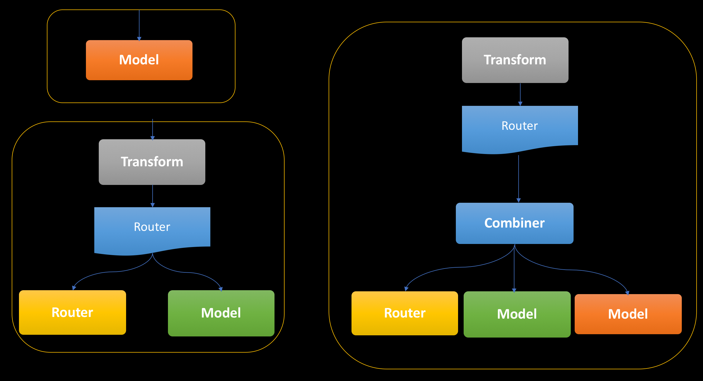

DEMO 1
Simple Iris Classification
Discuss MakefileMakefile
VERSION=1.1
TRAIN_IMAGE_BASE=alvinhenrick/kube-demo-simple
SERVE_IMAGE_BASE=alvinhenrick/iris-classification
build:
docker build -t ${TRAIN_IMAGE_BASE}:${VERSION} .
login:
docker login
push:
docker push ${TRAIN_IMAGE_BASE}:${VERSION}
createpvc:
kubectl apply -f mystorage.yaml
deletepvc:
kubectl delete -f mystorage.yaml
copydata:
kubectl cp ./iris dataaccess:/data/
train:
kubectl apply -f tfjobsimple.yaml
download:
kubectl cp dataaccess:/model/iris_model ./iris_model
s2i:
s2i build . seldonio/seldon-core-s2i-python3:0.1 ${SERVE_IMAGE_BASE}:${VERSION} --copy ./iris_model --env MODEL_NAME=IrisClassifier --env API_TYPE=REST --env SERVICE_TYPE=MODEL --env PERSISTENCE=0
s2ipush:
docker push ${SERVE_IMAGE_BASE}:${VERSION}
serve:
cd simple_demo_ks ; ks generate seldon-serve-simple iris-classification --image=${SERVE_IMAGE_BASE}:${VERSION}
cd simple_demo_ks ; ks apply default -c iris-classification
portforward:
kubectl port-forward `kubectl get pods -n default -l service=ambassador -o jsonpath='{.items[0].metadata.name}'` -n default 8080:80
predict:
curl -X POST -H 'Content-Type: application/json' -d '{"data":{"ndarray":[[5.9, 3.0, 4.2, 1.5],[6.9, 3.1, 5.4, 2.1],[5.1, 3.3, 1.7, 0.5]]}}' http://localhost:8080/seldon/iris-classification/api/v0.1/predictions
tail:
kubectl logs -f kube-demo-simple-master-0
tailseldon:
kubectl logs -f `kubectl get pods -l seldon-app=iris-classification -o=jsonpath='{.items[0].metadata.name}'` iris-classification
stop:
kubectl delete -f tfjobsimple.yaml
clean:
cd simple_demo_ks ; ks delete default -c iris-classification
cd simple_demo_ks ; ks component rm iris-classification
# ksonnet delete and remove component
Declare the variable,tag and version for training and serving docker image.
Docker build training image.
Login to your docker hub account.
Push the training docker image to docker hub.
Create/Delete Persistence volume container.
Copy training data into Persistence volume container.
Run the training job with Kubeflow.
Download the trained model.
Build model serving docker image with S2i.
Push the serving docker image to docker hub.
Serve the model with Kubeflow and Seldon.
Forward the port from the Ambassador container to localhost.
Make predictions via REST API and Seldon through the Ambassador proxy setup by Kubeflow.
Tail the training container log for debugging.
Tail the seldon serving container log for debugging.
Clean up training job.
Clean up seldon serving job.
TFJob
---
apiVersion: "kubeflow.org/v1alpha2"
kind: TFJob
metadata:
name: kube-demo-dist
spec:
tfReplicaSpecs:
Master:
replicas: 1
template:
spec:
containers:
- name: tensorflow
image: alvinhenrick/kube-demo-dist:1.1
command: ["python", "/code/train_and_eval.py","--output_path=/model/imdb_model"]
volumeMounts:
- name: data
mountPath: "/data"
- name: models
mountPath: "/model"
volumes:
- name: data
persistentVolumeClaim:
claimName: mydata
- name: models
persistentVolumeClaim:
claimName: mymodels
Worker:
replicas: 3
template:
spec:
containers:
- name: tensorflow
image: alvinhenrick/kube-demo-dist:1.1
command: ["python", "/code/train_and_eval.py","--output_path=/model/imdb_model"]
volumeMounts:
- name: data
mountPath: "/data"
- name: models
mountPath: "/model"
volumes:
- name: data
persistentVolumeClaim:
claimName: mydata
- name: models
persistentVolumeClaim:
claimName: mymodels
PS:
replicas: 2
template:
spec:
containers:
- name: tensorflow
image: alvinhenrick/kube-demo-dist:1.1
command: ["python", "/code/train_and_eval.py","--output_path=/model/imdb_model"]
volumeMounts:
- name: data
mountPath: "/data"
- name: models
mountPath: "/model"
ports:
- containerPort: 6006
volumes:
- name: data
persistentVolumeClaim:
claimName: mydata
- name: models
persistentVolumeClaim:
claimName: mymodels
TFJob is a Kubernetes custom resource definition that makes it easy to run TensorFlow training jobs.
The Master is responsible for orchestrating training and performing tasks like checkpointing the model.
Kubernetes training container specification
Kubernetes Persistent volume mounts
The Worker do the actual work of training the model. In some cases, worker 0 might also act as the Master.
The PS are parameter servers; these servers provide a distributed data store for the model parameters.
The example graphs
 Advance GraphsSeldon Deployment
{
"apiVersion": "machinelearning.seldon.io/v1alpha2",
"kind": "SeldonDeployment",
"metadata": {
"labels": {
"app": "seldon"
},
"name": "your-deployment-name"
},
"spec": {
"annotations": {
"project_name": "your project name",
"deployment_version": "your-deployment-version"
},
"name": "your-deployment-name",
"oauth_key": "oauth-key",
"oauth_secret": "oauth-secret",
"predictors": [
{
"componentSpecs": [
{
"spec": {
"containers": [
{
"image": "your-docker-image",
"imagePullPolicy": "IfNotPresent or Always etc",
"name": "your-model-name",
"resources": {
"requests": {
"memory": ""
}
}
}
],
"terminationGracePeriodSeconds": ""
}
}
],
"graph": {
"children": [],
"name": "your-model-name",
"endpoint": {
"type": "your-endpoint-type #REST or #GRPC"
},
"type": "MODEL"
},
"name": "your-model-name",
"replicas": "# Number of replica",
"annotations": {
"predictor_version": "your-model-version"
}
}
]
}
}
SeldonDeployment is a Kubernetes custom resource definition that makes it easy to server models on Kubernetes.
Seldon serving container specification
The deployment graph definition
DEMO 2
Simple IMDB Document Classification
Thank you!!!!